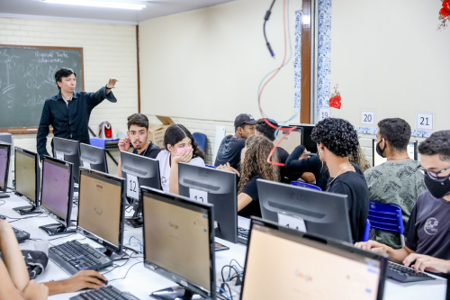

Começamos pela historia de criação da internet, que foi criada pelo EUA, durante a guerra fria,
com medo de perder seus aquivos, que ficavam expalhados entre suas bases, criando assim uma rede que com um tempo,atualmente,
so é possivel o acesso atraves de cabos de fibra que é passado pela água".

sendo assim hoje um item essencial para a população mundial, apesar de seu alcance não ser tão grande assim,
acredito que hoje sem a internet a civilização não teria evoluido o sufiente. Gerando um empacto significativo
na sociedade e no mundo.